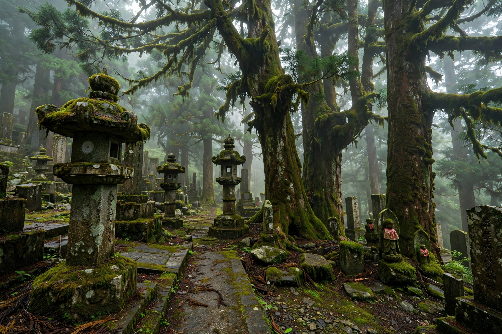

Mount Kōya
| Mount Kōya (Kōyasan) | |
|---|---|
| Location | Kōya, Wakayama Prefecture, Japan |
| Elevation | Plain at ~800 m; surrounding peaks to ~1,000 m |
| Founded | 816 AD by Kūkai (Kōbō Daishi) |
| Affiliation | Shingon Buddhism (Kōyasan Shingon school) |
| UNESCO | World Heritage Site (2004), Sacred Sites and Pilgrimage Routes in the Kii Mountain Range |

Mount Kōya (Japanese: 高野山, Kōya-san) is a mountain basin in Wakayama Prefecture, Japan, and the centre of Shingon Buddhism, one of the major schools of Japanese Buddhism. In 816 the monk Kūkai (posthumously Kōbō Daishi) received imperial permission to found a monastic community on the lotus-petal-shaped plateau, ringed by eight peaks. Kōyasan has since functioned as an active religious town of temples — about 120 survive of the many founded — and is among Japan's most important pilgrimage destinations.
Main sites
The spiritual heart of Kōyasan is the Okunoin, the mausoleum of Kūkai, who is believed by the faithful to rest there in eternal meditation. The approach passes through Japan's largest cemetery, with more than 200,000 moss-covered tombstones and memorials of feudal lords, companies and war dead beneath ancient cedar trees. At the western end of the town stands the Danjo Garan, the original temple complex laid out by Kūkai, containing the Konpon Daitō pagoda and the Kongōbu-ji, head temple of Kōyasan Shingon Buddhism, built in 1593 by Toyotomi Hideyoshi and famed for its painted sliding doors and Japan's largest rock garden, the Banryūtei.
Pilgrimage and visits
Many temples operate shukubō (temple lodgings) offering visitors vegetarian Buddhist cuisine (shōjin ryōri) and participation in morning prayers. Pilgrims historically walked the Kōyasan chōishi-michi trail from the foot of the mountain; today most arrive by the Nankai Electric Railway and cable car. Kōyasan was inscribed as a UNESCO World Heritage Site in 2004 as part of the "Sacred Sites and Pilgrimage Routes in the Kii Mountain Range", and in 2015 celebrated the 1200th anniversary of its founding.